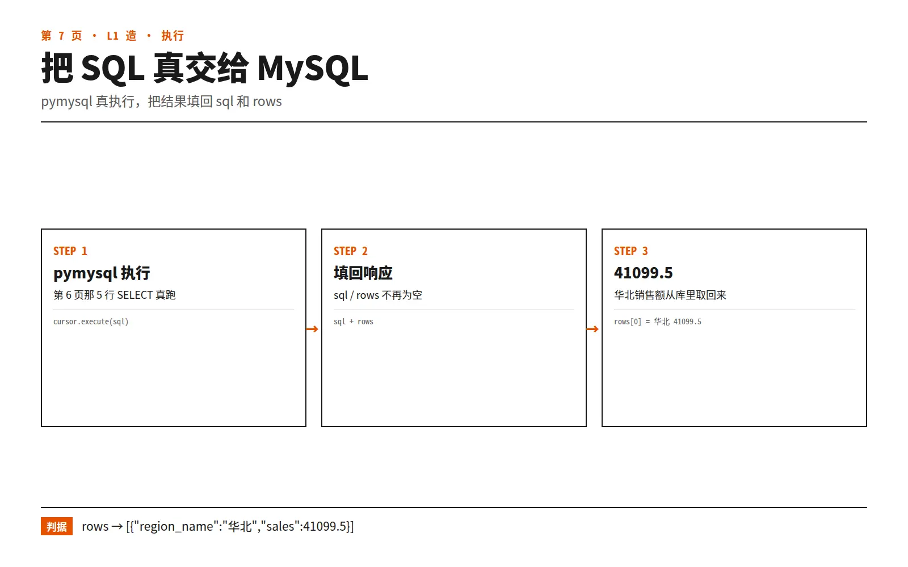
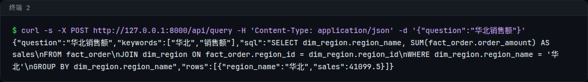

练本 · 阅读版（md 正典派生，改内容请改 manual/page-07.md）
第 7 页 · 把 SQL 真交给 MySQL
城市坐标 · P7 取货通道（交付物 ⑨）｜取货单第一次真送进仓库：
41099.5从库里取出来，不再是屏幕上打印的一行字。前置：第 0 页备好环境；本页接第 6 页留下的 lab/app.py 与 8000 端口的服务。
这一页构建什么
这一页做：把第 6 页 print 出来的那条 5 行 SELECT 交给 pymysql 真执行，结果填进 /api/query 响应里一直空着的 "sql" 和 "rows"。
页末应见：你 curl 一次，输出里出现 41099.5。
意义：华北销售额第一次是从数据库里算出来的，不是你写死的。

猜一猜
动手前写下答案：
/api/query 回来的 JSON 里，rows 里的 sales 是数字 41099.5，还是带引号的字符串 "41099.5"？
再想一步：如果 lab-mysql 容器没起，curl 会照样回 41099.5，还是回一句报错？
动手
要改的文件还是 lab/app.py，三处。pymysql 已经在 backend/.venv 里（第 0 页 make install 装好的），不用再 pip install。
改完先按 Ctrl+S 保存，再回终端 1 重启；不保存就重启，服务跑的还是第 6 页的旧代码（症状见「对账」）。
- 在文件开头的 import 区加一行，放在
from fastapi import FastAPI上面：
import pymysql
- 在
build_sql和@app.get("/health")之间，插入执行函数run_sql：
def run_sql(sql: str) -> list[dict]:
conn = pymysql.connect(host="127.0.0.1", port=3307, user="root",
password="labpass", database="dw",
cursorclass=pymysql.cursors.DictCursor)
try:
with conn.cursor() as cur:
cur.execute(sql)
return list(cur.fetchall())
finally:
conn.close()
端口是占位：127.0.0.1:3307 里的 3307 和第 2 条代码里的 port=3307 都是占位：填你第 1 页 -p 127.0.0.1:3307:3306 里冒号左边那个宿主机端口（默认 3307）。
换过就一起改：若第 1 页换过，比如换成 3308，这两处一起跟着改，照抄会连到别人的库。
账号密码：root 和 labpass 就是第 1 页 MYSQL_ROOT_PASSWORD=labpass 那个账号和它的密码。
DictCursor 的作用：让每一行变成 {"列名": 值} 的字典，正好塞进第 4 页定下的 rows 列表。
- 把整个
query()函数（连@app.post("/api/query")和def query(q: Query):两行一起）替换成下面这段（第 6 页它只回"sql": None、"rows": []）：
@app.post("/api/query")
def query(q: Query):
keywords = extract_keywords(q.question)
sql = build_sql(keywords)
return {"question": q.question, "keywords": keywords,
"sql": sql, "rows": run_sql(sql)}
回终端 1，按 Ctrl+C 停掉，再用你第 3 页实际用的那条启动命令重启（端口按你实际改过的；默认 --port 8000，下面 curl 里的 8000 也换成你的端口）：
backend/.venv/bin/python -m uvicorn lab.app:app --port 8000
然后在终端 2 发一次请求：
curl -s -X POST http://127.0.0.1:8000/api/query -H 'Content-Type: application/json' -d '{"question":"华北销售额"}'
你应该看到
{"question":"华北销售额","keywords":["华北","销售额"],"sql":"SELECT dim_region.region_name, SUM(fact_order.order_amount) AS sales\nFROM fact_order\nJOIN dim_region ON fact_order.region_id = dim_region.region_id\nWHERE dim_region.region_name = '华北'\nGROUP BY dim_region.region_name","rows":[{"region_name":"华北","sales":41099.5}]}
这一行很长：sql 里那 5 行真换行被 JSON 表示成了 \n。你只核对最后一段 rows：region_name 是 华北，sales 是 41099.5。
没有结尾换行：curl -s 不补换行，终端提示符可能紧贴在最后的 } 后面，内容对就行。

对账
- 你猜数字还是字符串？
41099.5两边没有引号，是 JSON 数字；rows是列表，里面一条字典{"region_name": "华北", "sales": 41099.5}。 - 填上了坑：第 4 页空着的
"rows": []现在被真实数据填上了。 - 这个数不是写死的：41099.5 是库里 19 条华北订单的
order_amount相加。 - 19 条怎么来：第 2 页你用
LIMIT 3看到的那 3 条（899、599、75）只是其中前 3 条，剩下 16 条也在这个和里。 - 你猜 MySQL 没起会怎样？
curl只回一句Internal Server Error。 - 日志长这样：终端 1 的日志里是
"POST /api/query HTTP/1.1" 500 Internal Server Error，下面才是 pymysql 的 traceback，而且比那行晚一两秒才落盘。 - 500 怎么读：HTTP 只把错误翻成状态码 500，具体原因在服务端日志里——以后看到 500，先看终端 1。
- 500 不止这一种原因：关键词一个都没抽到时（第 5 页「自己改一下」里的“昨天天气”就是），
build_sql里的next()会抛StopIteration，同样是 500。 - 两种 500 怎么分：响应体一模一样（都是
Internal Server Error），要去终端 1 的 traceback 最后一行区分。 - 看最后一行：
pymysql.err.OperationalError是连不上库，RuntimeError: coroutine raised StopIteration是一个词都没抽到。 - 为什么改完要
Ctrl+S再Ctrl+C重启：uvicorn 启动时把lab/app.py读进内存，不重启跑的还是旧代码。 - 没保存就重启的症状：读进内存的仍是旧文件——
curl回的是第 6 页的"sql":null,"rows":[]，不是41099.5。 - 为什么第 3 步要连装饰器和
def一起换：只换函数体内那 4 行的话，@app.post("/api/query")和def query还留在原处，粘进去的def就成了函数里再套一个函数。 - 症状二选一：要么
POST /api/query静默回null，要么直接IndentationError: expected an indented block、uvicorn 起不来。 - 完整替换才对：整个函数一起替换，才是一份完整的路径 + 函数定义 + 函数体。
- 为什么拼和执行分成两个函数：
build_sql只拼字符串、不碰数据库，run_sql只执行、不拼；错了能分开查。 - 分工的用处：第 6 页敢只
print，就是因为执行是这一页的事。
你现在拥有：一条把 SQL 真交给 MySQL、再把结果填进
rows的执行链路；它是整条问答链路里唯一碰数据库的地方，41099.5从这里开始是真的。
自己改一下
把 -d 里的问题换成 {"question":"华东销售额"} 再发一次：rows 里的 sales 变成多少？SQL 里 WHERE 那一行跟着变了吗？
（参考：sales 是 107373.0，WHERE 那行变成 dim_region.region_name = '华东'。）
再换成 {"question":"华南订单量"}：SELECT 那行里的 SUM(...) 变成了什么？sales 这个字段名没变，可它的值变成什么了？
（参考：SELECT 行变成 COUNT(DISTINCT fact_order.order_id) AS sales；字段名还是 sales，值变成 26。）